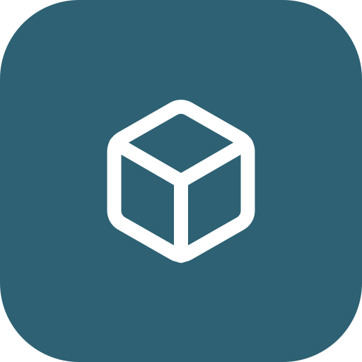
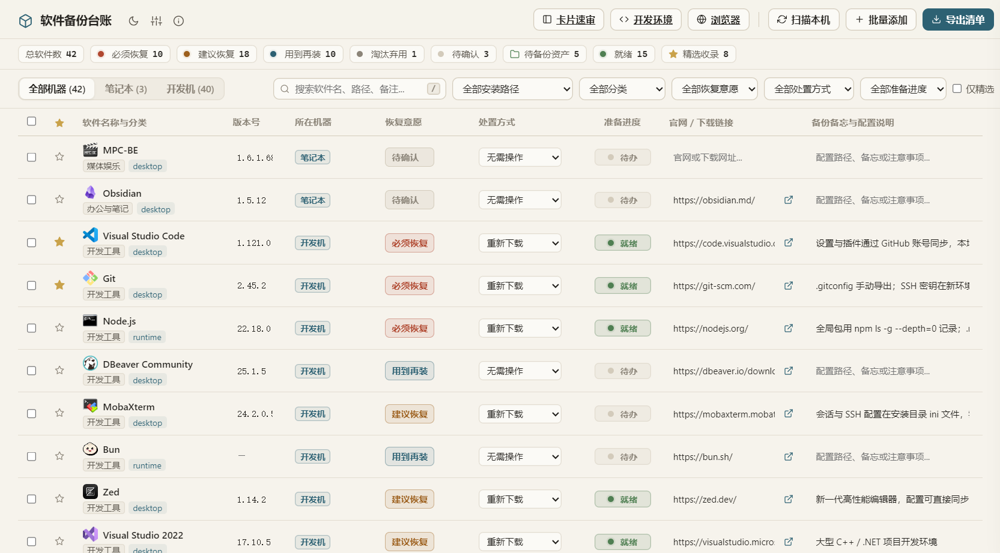
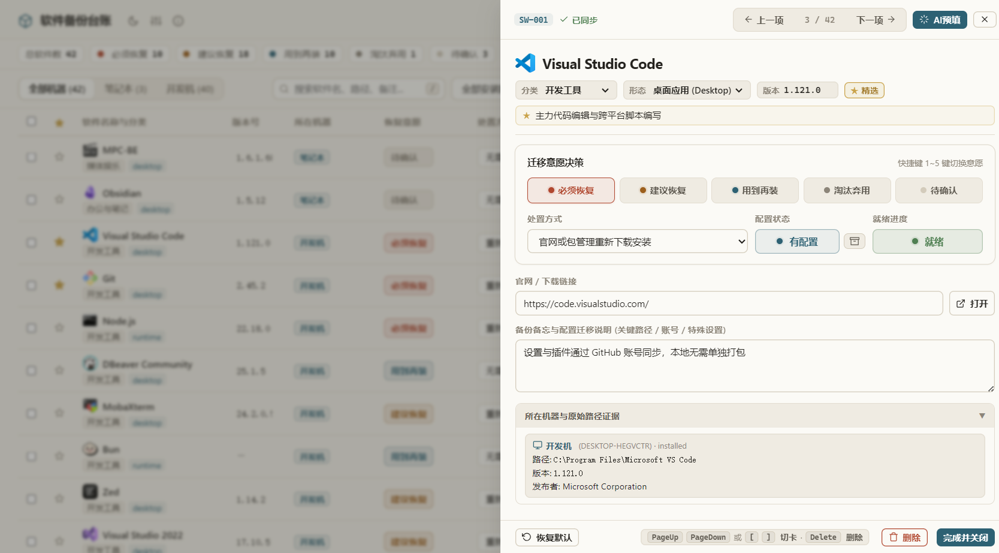
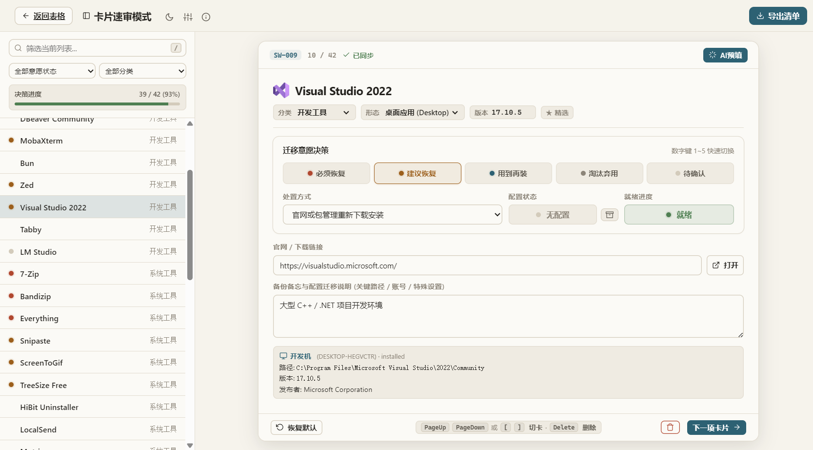
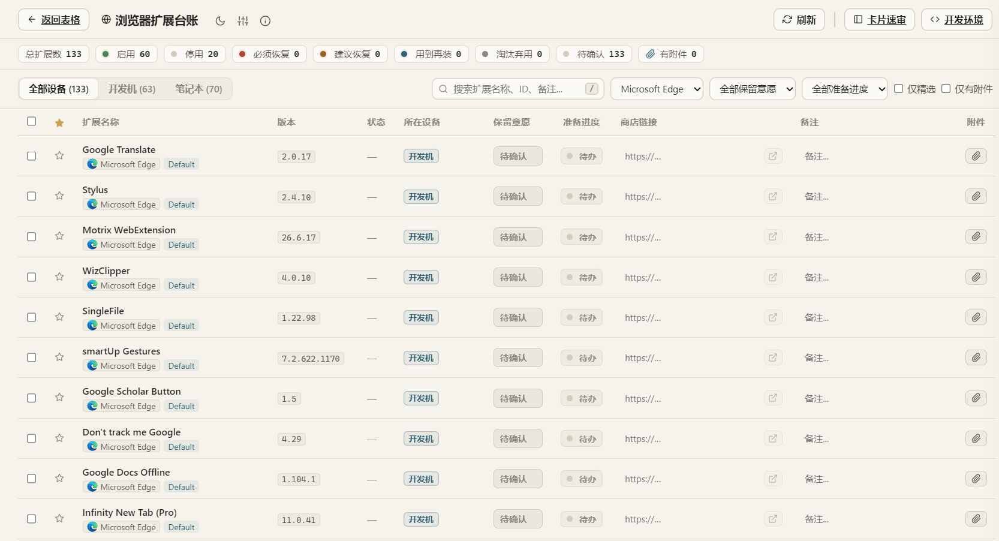
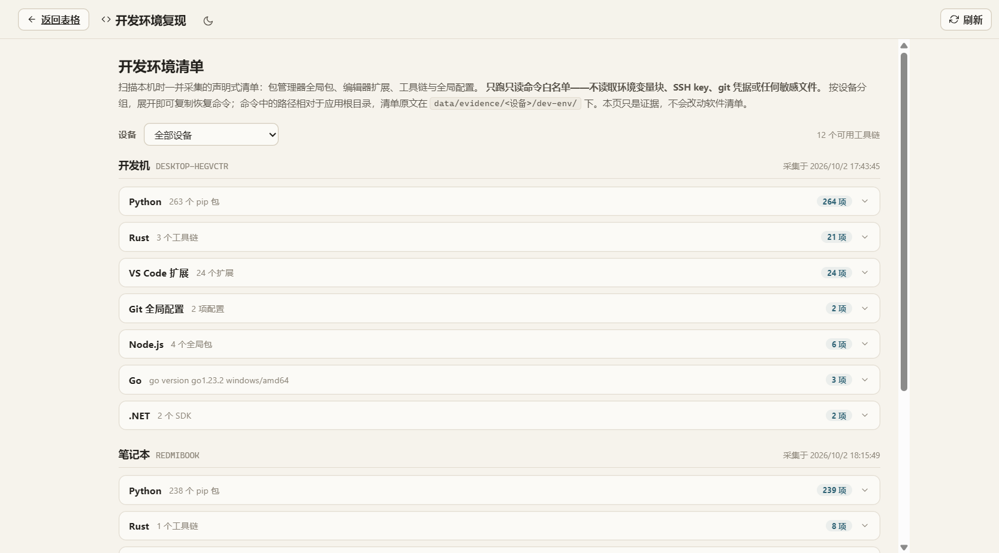

它怎么知道我都装了什么
扫描时读取三类来源，再按名称与安装路径归并去重：
- 注册表里的已安装程序（含版本、发布者、安装位置）
- 便携 / 绿色软件目录的第一层
- 开始菜单与桌面快捷方式指向的独立工具
扫完就结束，不在你电脑上留下中间文件。

软件备份台账一键扫描本机软件，按「必须恢复 / 用到再装 / 淘汰弃用」分级，记下每项的安装路径、官网与配置位置，最后导出一份可以直接照着执行的重装恢复清单。
Windows 10 / 11 · 绿色便携，清单默认只存在你自己的电脑上，可选自建 WebDAV 同步 · AGPL-3.0 开源

真正麻烦的从来不是装软件，而是想不起来装过什么、也不知道哪些配置散落在哪里。
软件备份台账把这件事收敛成：一次扫描，一次标注。
自动采集注册表安装项、便携软件与开始菜单快捷方式，归并去重后入库，不用手敲。
每条软件定两件事：要不要装（必须恢复 / 用到再装 / 淘汰弃用 / 待确认），以及怎么备份（保留目录 / 重新下载 / 账号同步 / 无需操作），再记下配置文件具体在哪。
一次只问一条。键盘 1–4 定恢复意愿，翻页键切下一条，两百条也能一口气标完。
接入本地 LM Studio 或任意 OpenAI 兼容端点（如 DeepSeek），自动补全分类、意愿与配置建议。
记录每款软件出现在哪台机器、装在哪里；重复条目一键合并，汇总各机器路径。
扩展单独一页：装了什么、在哪个浏览器、还启不启用，一眼看全；不读你的 Cookie 和密码。
pip、npm、Rust、VS Code 扩展、Go、.NET 都按设备列好，换电脑时照着敲一遍就装回来。
填入自建 WebDAV 地址即可把台账同步到网盘；同一时刻只有一台机器可写，其余只读，不会互相覆盖。
一键生成《重装恢复清单》与《精选资产库》两份文档，另可导出整份软件清单为 Excel 表格。
接上 Claude Code / Cursor / Pi 等支持 MCP 的 agent，它就能自己读台账、查安装路径、开发环境与归档文件，规划重装方案。默认只读；开启写入后还能帮你改版本号、补链接、增删条目，改动实时出现在表格里。
扫描时读取三类来源，再按名称与安装路径归并去重：
扫完就结束，不在你电脑上留下中间文件。

每款软件两个关键字段：恢复意愿决定重装时要不要装，处置方式决定怎么备份，再配一条配置备忘。标完就能看到「准备进度」，重装前一眼看清还差哪些没处理。
拿不准的交给可选的 AI 预判，但最终拍板永远是你。
清单里的每一行，长这样：
| 软件 | 恢复意愿 | 处置方式 |
|---|---|---|
| Visual Studio Code | 必须恢复 | 账号同步 |
| OBS Studio | 用到再装 | 导出配置 |
| 旧版 JDK 8 | 淘汰弃用 | 无需操作 |
清单长了就懒得改。卡片速审把每款软件摊成一张卡：左边是待办列表和进度，右边一次只问一条。
键盘 1–5 切换恢复意愿，PageUp / PageDown 或 [ ] 切下一条，标完自动进下一张。

按设备列出每个扩展的版本、状态和商店链接，保留意愿照样能逐条标注。换电脑时照着这张表装，常用的那几个不会漏。
不读你的 Cookie、密码，也不读扩展自己存的数据。

pip、npm 的全局包，Rust 工具链，VS Code 扩展，Go、.NET，按设备列成一张清单，换电脑时照着敲一遍就回来了。
只跑几条只读命令，不读环境变量、SSH 私钥和 git 凭据。这一页只是证据，不会动你的软件清单。

点一下「导出清单」，直接生成两份 Markdown，或将整份清单导出为 Excel 表格：
《重装恢复清单》节选：
## 必须恢复
- **Visual Studio Code** — 账号同步
官网：https://code.visualstudio.com/
配置：设置与插件通过 GitHub 账号同步
验证：登录后确认扩展列表与 Remote-SSH 可连
## 用到再装
- **Git** — 重新下载
官网：https://git-scm.com/
配置：.gitconfig 手动导出；SSH 密钥重新生成内置 MCP 服务端，Claude Code、Cursor、Pi 等支持 MCP 的 agent 接上后，就能直接读这份台账：装了哪些软件、装在哪、开发环境怎么复现，自己规划重装方案。
默认只读。在「设置 → Agent 集成」里开启写入后，还能让它帮你改版本号、补官网链接、增删条目——改动会实时出现在表格里，每次写入都记入本地审计日志。
扫描时把安装包、绿色压缩包拖进保管箱，它们会跟着台账一起拷走。新机器上 agent 直接从归档里拿包安装——不用重新找官网，断网也行。
台账存的就是这些能直接用的东西：安装包、配置、路径与官网。
Windows 10 / 11 即可，不需要装 Python、Node 或任何运行时。
直接下载 zip → 解压 → 双击 exe。首次运行会在 exe 旁边自动生成 data/。
点顶部的「扫描本机」，几十秒内把注册表安装项、便携软件和快捷方式收进来。
为每款软件选好恢复意愿与处置方式，点「导出清单」，拿到重装恢复清单与精选资产库。
软件备份台账/
├─ windows-software-ledger.exe
└─ data/ ← 清单与设置，连同文件夹一起拷走即可扫描、整理、导出全部在本地完成，默认不联网。联网只发生在你主动开启的可选功能：AI 辅助预判（把软件名发给你自己填写的模型端点，本地 LM Studio 或 DeepSeek / OpenAI 兼容 API），以及多机同步（连接你自己配置的 WebDAV）。
全部在 exe 同目录的 data/ 里：台账 software.json、设置 config.json，以及图标、配置归档、扫描证据等子目录。不写注册表、不写 AppData，整个文件夹拷走就是迁移。
都不用。单个 exe 绿色运行，系统只需 Windows 10 / 11（精简系统可能需补一个 WebView2 Runtime）。
清单自动生成、可反复扫描增量更新；每条都带机器分布、安装路径、官网链接与配置备忘，还带恢复意愿和准备进度——导出的不是一张表，而是一张能照着执行的重装清单。
MCP 是让 AI agent 直接读取工具数据的开放协议。接上后 agent 默认只读：能查机器、软件、官网链接、开发环境与归档文件，帮你规划重装。只有你在「设置 → Agent 集成」里显式打开写入，它才能改台账，而且每次写入都记入本地审计日志 data/.mcp/audit.jsonl；改完表格会自动刷新，你能实时看到它改了什么。MCP 服务端本身只读写这份台账，但接上它的 agent 拿着台账里的官网、安装路径与归档，完全可以帮你把软件重装回来——台账出信息，动手的是 agent。
那是误报。这个工具会枚举已安装软件、把内嵌的 PowerShell 采集脚本释放到临时目录执行，还可能连接你配置的 WebDAV 做多机同步——这些行为在杀软的启发式规则里，和恶意软件高度相似。本项目 完全开源、没有加壳混淆，代码都在 GitHub 上可逐行查看，你也可以直接自行编译。被拦时给 exe 加一条白名单即可；如果不放心，请不要使用——我们宁可你把家底记在自己的表格里，也不想让你承担任何风险。
免费开源，基于 AGPL-3.0 许可。觉得有用的话，去 给个 Star 就是最大的支持。